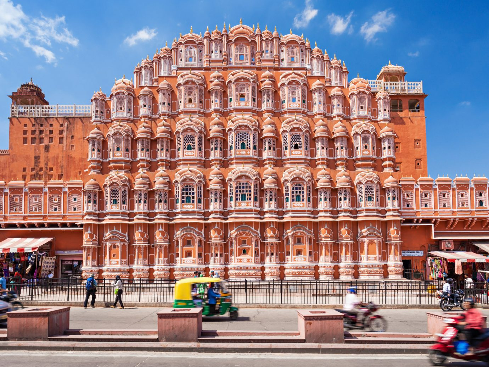

Places to See In Spring
List
- India Gate
- Taj Mahal
- Hawa Mahal
- Chittorgarh Fort
- Golkonda Fort
- Akshardham Temple
India Gate, located in the heart of New Delhi, is a war memorial dedicated to the 70,000 Indian soldiers who lost their lives fighting for the British Army during World War I. Designed by Sir Edwin Lutyens, this iconic archway stands as a symbol of bravery and sacrifice.
The Taj Mahal, situated in Agra, Uttar Pradesh, is an exquisite white marble mausoleum built by Emperor Shah Jahan in memory of his beloved wife Mumtaz Mahal. This UNESCO World Heritage site, renowned for its stunning architecture and intricate inlay work, is a timeless symbol of love and devotion.

Hawa Mahal, or the "Palace of Winds," in Jaipur, Rajasthan, is a striking pink sandstone structure with 953 small windows, known as jharokhas. Built in 1799 by Maharaja Sawai Pratap Singh, it allowed royal women to observe street festivities while remaining unseen, showcasing Rajputana architecture.
Chittorgarh Fort, located in Rajasthan, is one of India's largest and most historically significant forts. It served as the capital of Mewar and is renowned for its tales of Rajput valor and sacrifice. The fort complex includes majestic palaces, temples, and towers, reflecting its rich heritage.

Golkonda Fort, near Hyderabad, Telangana, is a massive fortress known for its impressive fortifications and advanced acoustics. Once the capital of the medieval Golconda Sultanate, it is famed for its diamond trade, including the famous Koh-i-Noor diamond, and offers panoramic views from its hilltop location.

Akshardham Temple in Delhi is a modern architectural wonder, inaugurated in 2005. This sprawling complex, dedicated to Bhagwan Swaminarayan, showcases traditional Indian art, culture, and spirituality. Its intricately carved structures, lush gardens, and musical fountains attract millions of visitors annually, making it a significant cultural landmark.